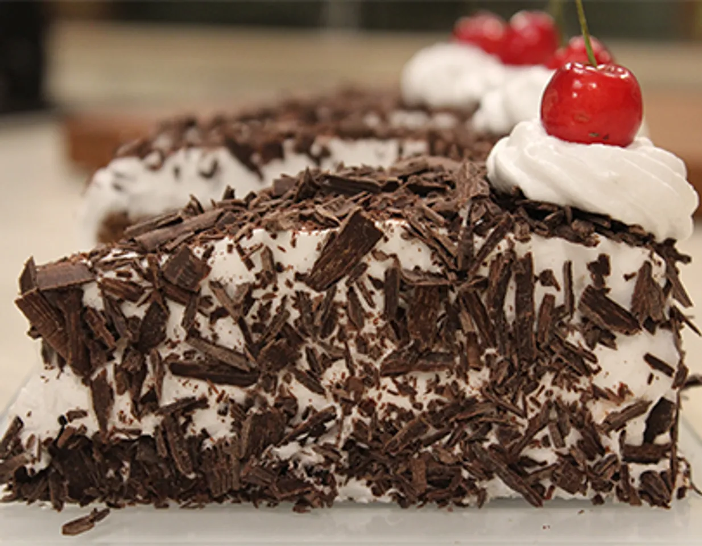

Black forest pastry

Description
A Black forest pastry, also known as Schwarzwalder Kirschtorte in German, is a decendant deser originating from Germany
Ingridents
- 1 Dark chocolate sponge
- 2 Cups whipped cream
- Fresh cherries
- 2 Tablespoons sugar
- Sugar syrup
- 250 grams chocolate shavings
Steps
- Heat a non-stick pan, add cherries, sugar and lemon juice and bring to the gentle simmer and cook for five
to ten minutes. Set aside to cool for at least ten minutes.
- Trim a thin layer from the top of dark chocolate sponge with a serrated knife and then cut in to a
rectangular shape. Further cut from the middle to make two layers.
- Using a pastry brush apply some sugar syrup on the base half of the cake. Pipe out half cup of whip cream on
the edges. Place cherry compote in the middle.
- Using a pastry brush apply some sugar syrup on the base half of the cake. Pipe out half cup of whip cream on
the edges. Place cherry compote in the middle.
- Brush the top layer with the remaining sugar syrup, and frost the outside of the cake with most of the
remaining whipped cream.
- Cover the sides and top of the cake with chocolate shavings. Pipe rosettes with remaining whipped cream and
garnish with fresh cherries.
- Chill the cake in a refrigerator. Cut into slices and serve.